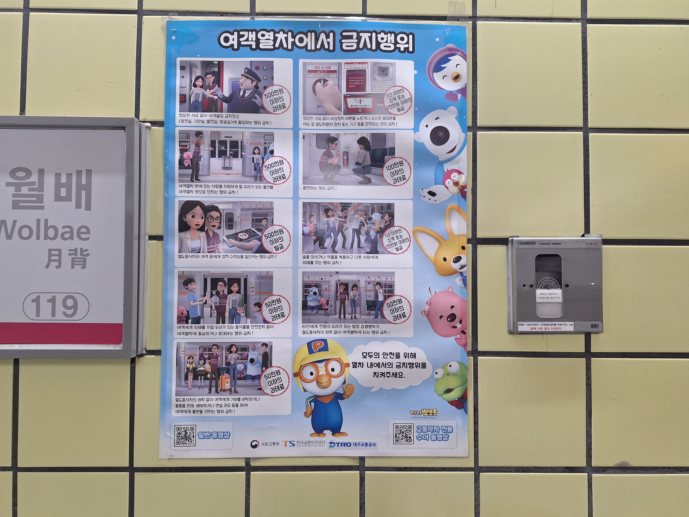
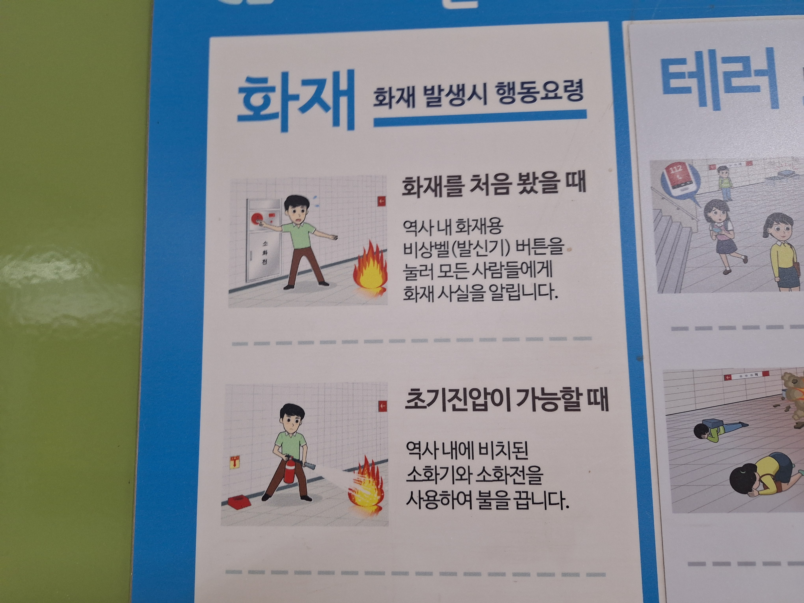
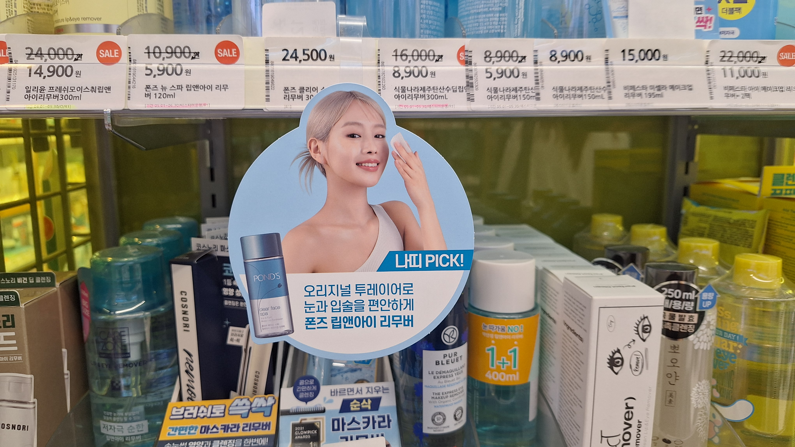
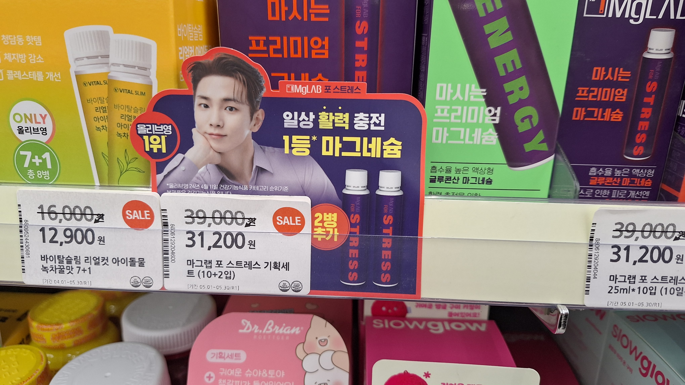
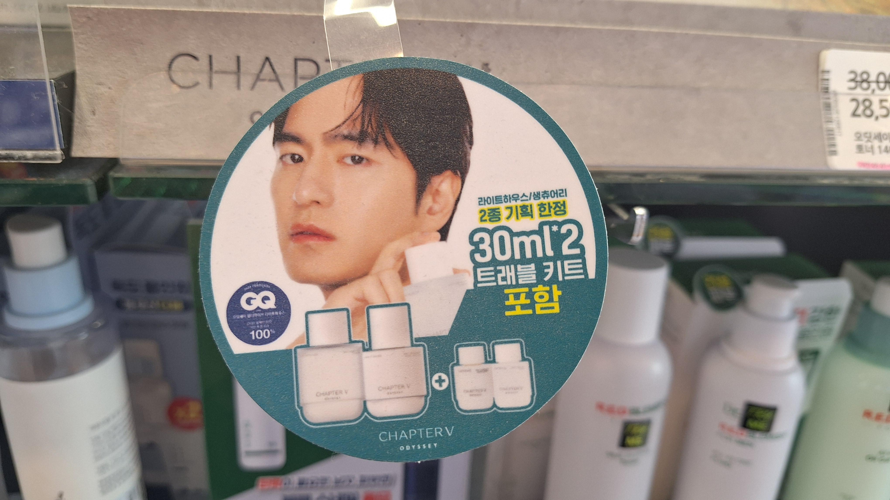
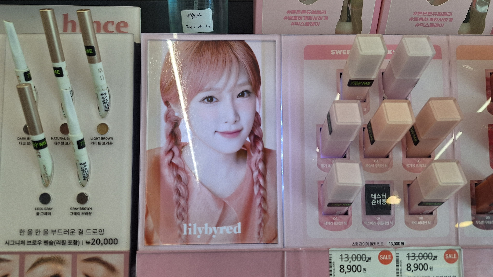
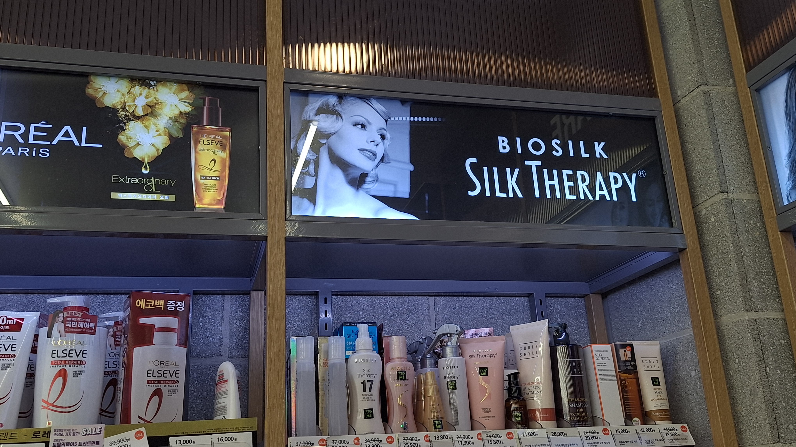
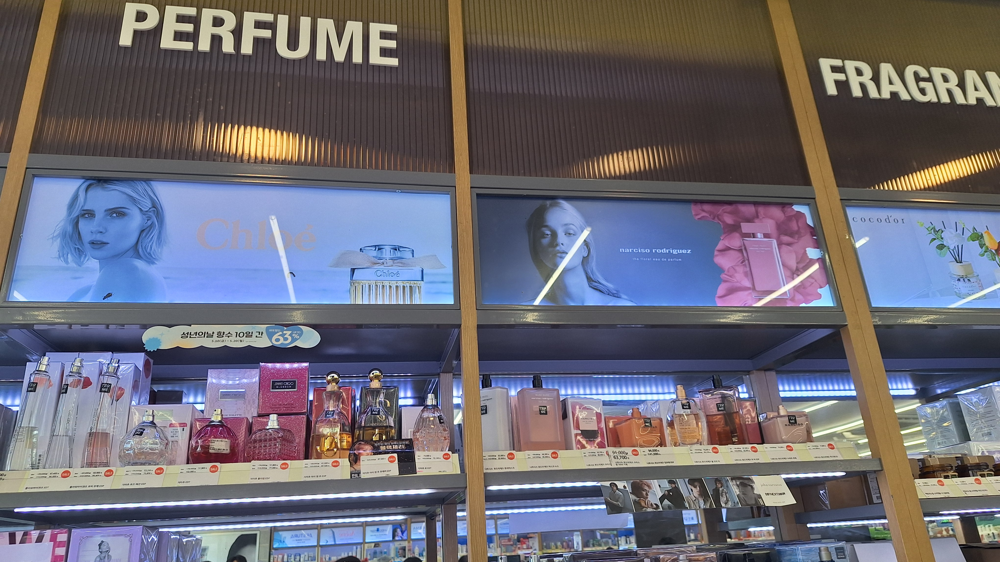
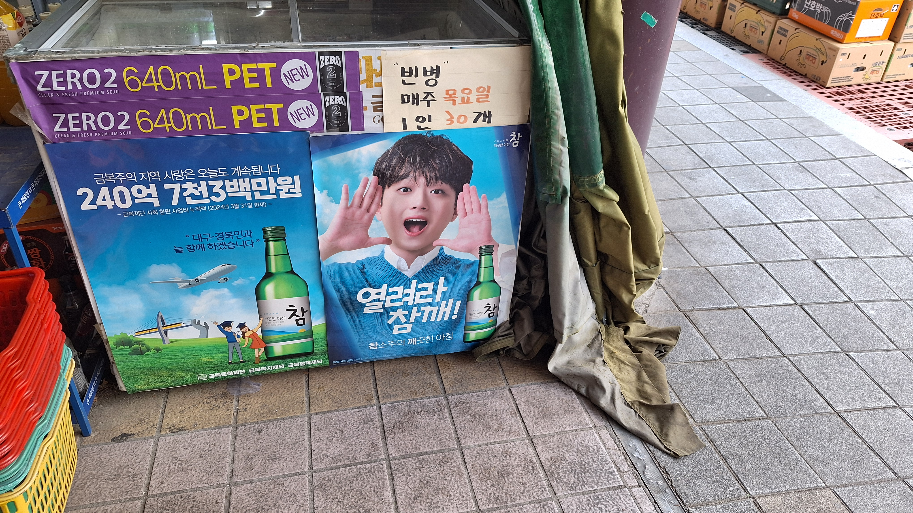

지하철 내부의 공익 광고 포스터다. 대상 연령층이 어린 아이들이기 때문에 뽀로로 캐릭터를 썼다. 모든 주의 문구에서 남자와 여자가 모두 등장한다. 불법 촬영에는 남자, 보호받거나 대피하는 내용에는 여자가 자주 등장하지만 이 공익 광고는 성별에 차이를 두지 않았다. 어린 아이들에게 잘못된 인식을 심어주지 않아 좋다. 뽀로로 캐릭터를 사용한 것도 비교적 권력 구조와는 거리가 먼 아동용 캐릭터라 좋았다. 하단에 수어 동영상을 준비해둔 것도 인상깊다.

지하철 승강장의 화재 관련 행동요령이다.
첫 번째 사례와는 달리 불을 진압하는 능동적인 부분에는 남성만 썼다. 공익을 위한 포스터인 만큼 성 고정관념을 악화시키는 이미지 사용은 자제해야 한다. 지하철 외로도 영화관이나 공공장소의 안내문에서 이런 경우를 자주 볼 수 있다. 모두 대피하는 것은 여성, 재난을 상대로 활약하는 것은 남성 위주다. 이런 이미지 사용이 편견을 심화시킨다. 정보 전달에도 도움이 되지 않는다.


화장품 가게 내부의 작은 팻말들이다. 여성 모델과 남성 모델 모두 존재했다. 하지만 모델의 성별에 따라 홍보되는 물품들 특성이 꽤 차이가 났다. 영양식품, 단백질 관련 제품에는 남성 모델이 많이 쓰였다. 반면, 색소 화장품 부문에서는 여성 모델들이 대다수였다. 운동은 남성이 좋아하는 활동이라는 이미지, 화장은 여성들의 행위라는 이미지가 작용했다. 그렇기 때문에 이런 결과가 있다. 광고는 특히나 이미지에 민감한 작업이다.


같은 열에 진열된 화장품들의 팻말들이다. 이 화장품 가게 안에는 성별을 가리지 않고 다양한 광고 팻말들이 있었다. 하지만 그 팻말들 사이에서 어떤 특징들을 발견할 수 있었다. 남성 모델의 대다수는 무표정하거나 강한 인상을 남기는 표정을 짓고 있다. 하지만 여성 모델의 대다수는 웃음을 짓고 수줍은 표정을 하고 있었다. 여성 모델이 광고하는 화장품들을 가장 많이 구입하는 건 여성들인데도 불구하고 남성들의 수요에 맞는 표정과 자세들이 사용된다.


헤어 관련 제품들과 향수들을 진열해둔 칸이다. 가장 상단에 있는 여성들의 공통점이 있다. 모두 머리카락과 얼굴은 한껏 꾸몄지만 목 아래부터 어깨까지 의상은 걸치지 않고 있어 마치 나체처럼 느껴진다. 마치 오프숄더 상의처럼 말이다. 이런 이미지들 또한 남성들의 수요가 있어 이렇게 많이 양산되는 걸까. 헤어 제품의 모델은 마릴린 먼로라는 아이콘을 떠오르게 했다.

마트의 냉장고에 부착된 소주 광고다. 광고 중인 소주 브랜드는 참 소주다. 참 소주의 역대 광고 모델들 중 처음으로 이찬원이라는 남자 모델을 고용한 광고다. 기존의 광고들은 여성의 아름다운 이미지를 강조했지만 이번 광고는 새로운 이미지를 시도해서 좋다. 소주를 마시는 연령층을 노리기에도 이찬원이라는 모델은 좋음 선택이다.
 정장 위주의 의류를 파는 가게다. 여러 광고 이미지들이 붙어있는데 모두 정장을 입은 남성 모델이다. 정장을 파는 많은 가게들이 모델로 남성을 사용하고 여성은 사용하지 않는다. 요즘은 여성 정장도 수요가 늘어나는 추세인데 광고 이미지에도 반영되어 여성 정장 모델도 보이면 좋겠다.
정장 위주의 의류를 파는 가게다. 여러 광고 이미지들이 붙어있는데 모두 정장을 입은 남성 모델이다. 정장을 파는 많은 가게들이 모델로 남성을 사용하고 여성은 사용하지 않는다. 요즘은 여성 정장도 수요가 늘어나는 추세인데 광고 이미지에도 반영되어 여성 정장 모델도 보이면 좋겠다.